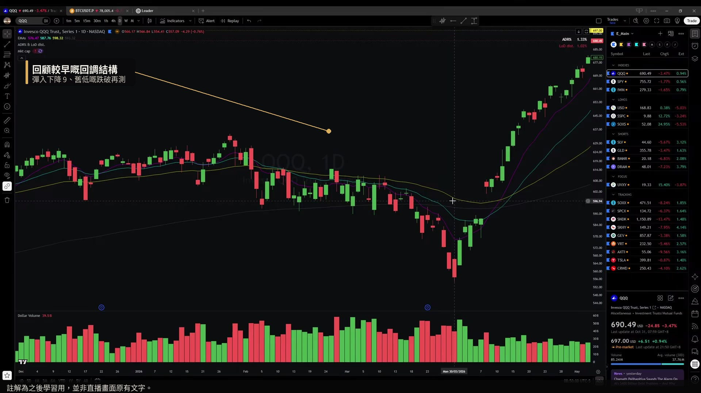
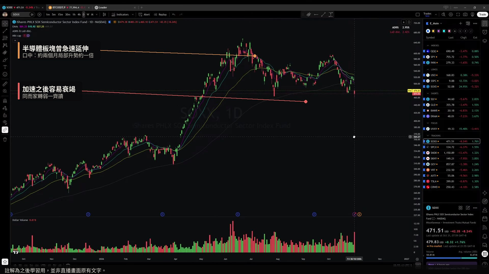
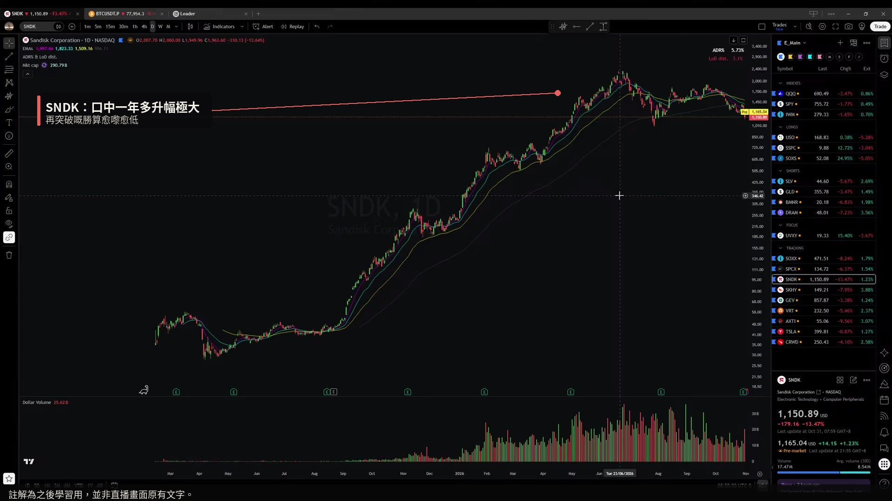
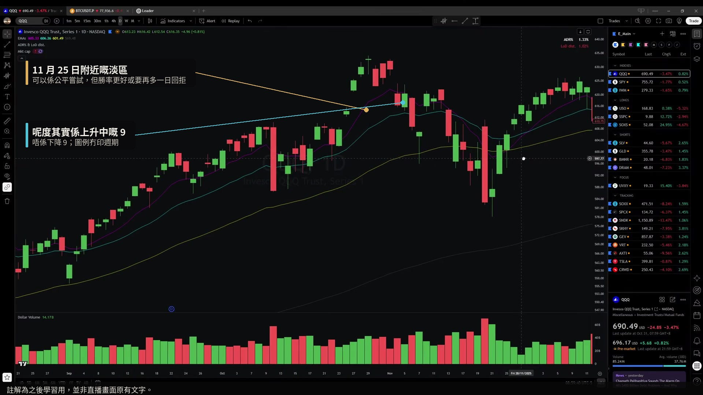

概要
加速、廣度同領先股轉弱，令今次同溫和回調唔同
聊天室先問 3 月 25 日點解唔淡 Qs，又點解淡近期反彈。佢先按 3 月 25 日嚟答：當日彈入下降 9，亦彈入舊低嘅跌破再測，係合理淡區；但記憶中倉位同個別股票點樣，佢唔肯定。之後解釋近月偏淡嘅原因：除咗廣度轉弱，更關鍵係部分 AI 名稱出現爆發式升勢，半導體板塊局部兩個月大約升一倍，覺得唔健康；加速之後往往會衰竭。又舉 SNDK 一年多升幅極大，再突破嘅勝算愈嚟愈低；再加上廣度轉差、油價偏強，以及部分 AI 領袖已經率先跌破。比起 3 月嗰段仍係穩定升勢、回調入 150 EMA，佢覺得今次唔同。
46:10 發問者更正，其實係問 11 月 25 日。佢記得當時自己錯過其後反彈，感到 FOMO，做過一啲唔好嘅交易（提到 SOFI）。若純粹問嗰日可不可以淡：覺得可以係公平嘗試，但稍為進取；若再多一日整固、或者在 21 或下降 9 出現回拒、甚至一根 pin bar，勝率會更好。不過當日實際係上升中嘅 9，唔係下降 9。在平坦 21 附近淡仍然可以，只是佢唔肯定當時大市點樣。
圖一
較早回調：彈入下降 9、跌破再測
直播 38:20

原話
I don't know how I positioned into the 25th of March, but probably I'm already quite heavily shorted. I think I have shorted quite a lot into this dip. I think yeah this day is a decent day for the short entries. We got a bounce into the declining nine and also bounce into the previous swing lows at the break and retest.
我唔記得 3 月 25 日自己點樣安排倉位，或者當日已經淡得頗重。喺呢段跌入面我應該已經淡了不少。我覺得呢日係一個不錯嘅淡倉日：有反彈入下降 9，亦有反彈入舊低嘅跌破再測。
點樣讀
呢幅係回放歷史結構：下降 9 加跌破再測，被當成合理淡區。佢同時承認記唔清當時實際倉位。
圖二
半導體曾急速延伸，之後轉弱
直播 43:30

原話
But why am I being so bearish right like on this dip or in the past month? Apart from the weakening breadth, declining breadth, I really think the explosive moves on some AI names are the trigger and are the main reason. Like the semi sector as a whole is going like a local rally is up 100% in two months. I think this is kind of unprecedented. It was such a crazy run and it's just not really healthy for this trend, and the stock market is not going, it won't keep going higher like all the time. But when it starts getting accelerated, going faster and faster, it means they probably going to be exhausted at some point.
但點解我在呢段跌、或者過去一個月會咁偏淡？除咗廣度轉弱之外，我真係覺得部分 AI 名稱嘅爆發式升勢先係觸發同主因。半導體板塊整體好似一段局部升勢，兩個月大約升咗一倍。我覺得幾前所未見，呢輪升得太狂，對呢個趨勢嚟講唔算健康；股市亦唔會一直升。當開始加速、愈嚟愈快，往往就表示某時會衰竭。
點樣讀
佢把「廣度」同「加速」分開講：廣度係背景，AI／半導體嘅爆發式升勢先係令佢更偏淡嘅主因。升幅數字係口中約數，本站唔當核實數據。
圖三
SNDK：升幅極大，再突破勝算愈低
直播 44:10

原話
And if you look at like SNDK is just up like 8,000% in one year and a half, just one year and two months. I just think like the odds of getting another breakout here is just getting less and less likely. And given all the other factors, the declining breadth, maybe also the strong oil prices, and some of the AI leaders are breaking down like in advance before the market starts showing weakness.
你睇 SNDK，一年半就升咗好似 8,000%，其實一年兩個月。我覺得再在呢度突破嘅勝算愈嚟愈低。再加上其他因素：廣度轉差、或者油價偏強，同埋部分 AI 領袖已經在大市顯弱之前率先跌破。
點樣讀
8,000% 係口中約數，本頁只保留原話，唔核對歷史回報。重點係：極端延伸之後，再突破嘅勝算下降；領袖先跌，係同 3 月溫和回調嘅分別之一。
圖四
11 月 25 日附近：公平淡區，但上升 9
直播 48:00

原話
I meant November 25th. I got left behind on this bounce. I don't think I'm catching this bounce on the late November to the early December. So I did some poor trades up here because I'm not getting involved in this bounce and I'm feeling a little bit FOMO. One of them were SoFi, and I shared it on the Trade Ideas interview. And if you're purely talking about like why not shorting on this day? I think it could be a fair short, but it's maybe a little bit aggressive. To me it will be a little bit better if we get one more like consolidation or like a rejection on this 21 or the declining nine. But this is actually the rising nine. Yeah, I think maybe it's better for getting one more day, like maybe a pin bar right on this day and then short the next day. There will be a better entry, or maybe just a higher win-rate entry. But I think it's still fine if you're shorting at near the flat 21.
原來係講 11 月 25 日。呢段反彈我係落後咗，11 月底到 12 月初呢段我冇追到。因為冇參與到，有少少 FOMO，所以在上面做過一啲唔好嘅交易。其中一隻係 SoFi，我在 Trade Ideas 訪問講過。若純粹問點解嗰日唔淡：我覺得可以係公平嘅淡，但稍微進取啲。若再多一日整固，或者在呢條 21、或下降 9 出現回拒，會更好。不過呢度其實係上升中嘅 9。或者再多一日，例如當日一根 pin bar，第二日先淡，入場會更好、勝率都可能更高。不過在平坦 21 附近淡，我都覺得仍然可以。
點樣讀
先承認自己錯過反彈、做過差交易，再評嗰日結構：公平但稍進取；上升 9 同下降 9 唔同；再多一日回拒或者 pin bar，勝率更好。呢啲係檢討，唔係新規則。
附註
注意事項
- 發問者先講 March 25，46:10 先更正為 November 25。前面按 3 月來答嘅部分仍然保留，因為佢用嚟對比今次同溫和回調。
- 升幅、倉位同舊交易只保留原話，本站唔核對歷史回報或者 P&L。
- SOFI 只在對白出現，當時冇獨立走圖，故唔出圖。